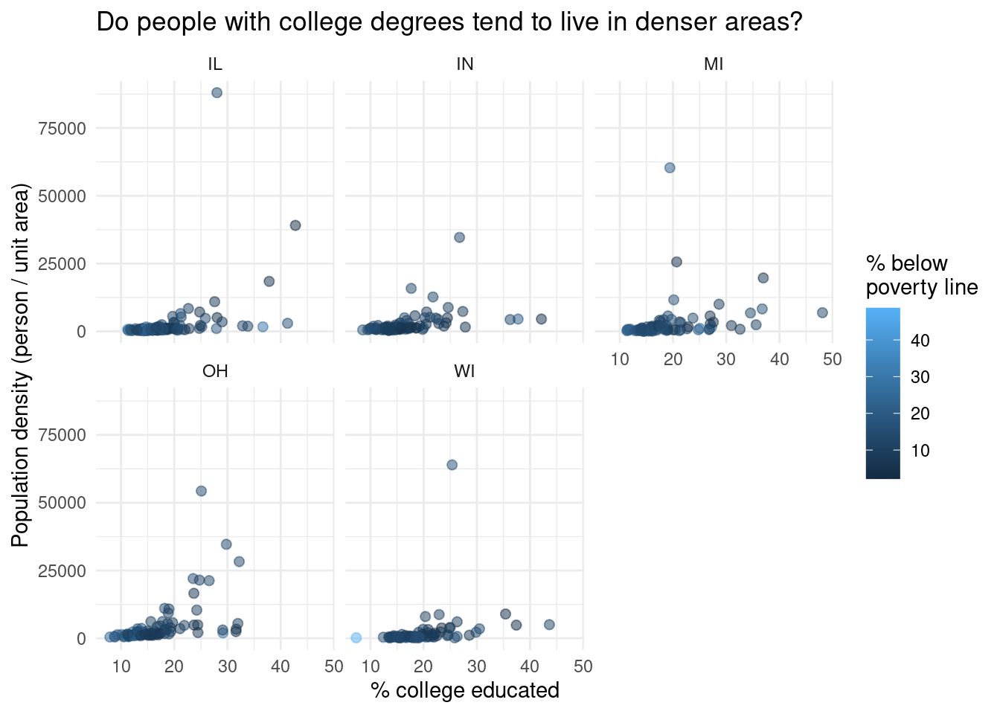

library(tidyverse)Lab 1 - Trip to the midwest
Lab
Important
This lab is due [some date in the future].
Learning goals
In this lab, you will…
- learn how to effectively visualize numeric and categorical data.
- continue developing a workflow for reproducible data analysis.
Getting started
Go to the data-sci-101 organization on GitHub. Click on the repo with the prefix
lab-1. It contains the starter documents you need to complete the homework assignment.Go to Posit Cloud and click on New Project > New RStudio Project from Git. Make sure you’ve connected your Posit Cloud and GitHub accounts.
Packages
We will use the tidyverse package to create and customize plots in R.
Data: Let’s take a trip to the Midwest
The data in this lab is in the midwest data frame. It is part of the ggplot2 R package, so the midwest data set is automatically loaded when you load the tidyverse package.
The data contains demographic characteristics of counties in the Midwest region of the United States.
Because the data set is part of the ggplot2 package, you can read documentation for the data set, including variable definitions by typing ?midwest in the console.
Exercises
As we’ve discussed in lecture, your plots should include an informative title, axes should be labeled, and careful consideration should be given to aesthetic choices.
In addition, the code should not exceed the 80 character limit, so that all the code can be read when you render to PDF. To help with this, you can add a vertical line at 80 characters by clicking “Tools” \(\rightarrow\) “Global Options” \(\rightarrow\) “Code” \(\rightarrow\) “Display”, then set “Margin Column” to 80, and click “Apply”.
Remember that continuing to develop a sound workflow for reproducible data analysis is important as you complete the lab and other assignments in this course. There will be periodic reminders in this assignment to remind you to render, commit, and push your changes to GitHub. You should have at least 3 commits with meaningful commit messages by the end of the assignment.
- Make a histogram to visualize the population density of counties. Set the binwidth to 10,000 and include axes labels and a title.
- Describe the shape of the distribution.
- Does there appear to be are any outliers? Briefly explain.
Note
For more details and code examples for histograms ggplot2 reference page.
- Create a scatterplot of the percentage of people with a college degree (
percollege) versus percentage below poverty (percbelowpoverty) with points colored bystate. Label the axes and legend and give the plot a title. Use thescale_color_viridis_d()function to apply the viridis color palette to your plot.
Note
See Introduction to the viridis color maps to read more about the viridis R package and see code examples.
Render, commit, and push your changes to GitHub with the commit message “Added answer for Ex 1 -2”.
Make sure to commit and push all changed files so that your Git pane is empty afterwards.
Describe what you observe in the plot from the previous exercise. In your description, include similarities and differences in the patterns across states.
Now, let’s examine the relationship between the same two variables, using a separate plot for each state. Label the axes and give the plot a title. Use
geom_smoothwith the argumentse = FALSEto add a smooth curve fit to the data. Which plot do you prefer - this plot or the plot in Ex 2? Briefly explain your choice.
Note
se = FALSE removes the confidence bands around the line. These bands show the uncertainty around the smooth curve. We’ll discuss uncertainty around estimates later in the course and bring these bands back then.
Now is another good time to render, commit, and push your changes to GitHub with a meaningful commit message.
Once again, make sure to commit and push all changed files so that your Git pane is empty afterwards.
- Do some states have counties that tend to be geographically larger than others? To explore this question, create side-by-side boxplots of area (
area) of a county based on state (state).- Describe what you observe from the plot.
- Which state has the single largest county? How do you know based on the plot?
- Do some states have a higher percentage of their counties located in a metropolitan area? Create a segmented bar chart with one bar per state and the fill determined by the distribution of
metro, whether a county is considered in a metro area. The y axis of the segmented barplot should range from 0 to 1.- What do you notice from the plot?
Note
For this exercise, you should begin with the data wrangling code below. We will learn more about data wrangling next week.
midwest <- midwest |>
mutate(metro = if_else(inmetro == 1, "Yes", "No"))Now is another good time to render, commit, and push your changes to GitHub with a meaningful commit message.
And once again, make sure to commit and push all changed files so that your Git pane is empty afterwards. We keep repeating this because it’s important, and because we see students forget to do this. So take a moment to make sure you’re following along with the instructions around Git.
- Recreate the plot below.
Hints:
- The
ggplot2reference for themes will be helpful in determining the theme. - The
sizeof the points is 2. - The transparency (
alhpa) of the points is 0.5. - You can put line breaks in labels with
\n.

Render, commit, and push your final changes to GitHub with a meaningful commit message.
Make sure to commit and push all changed files so that your Git pane is empty afterwards.